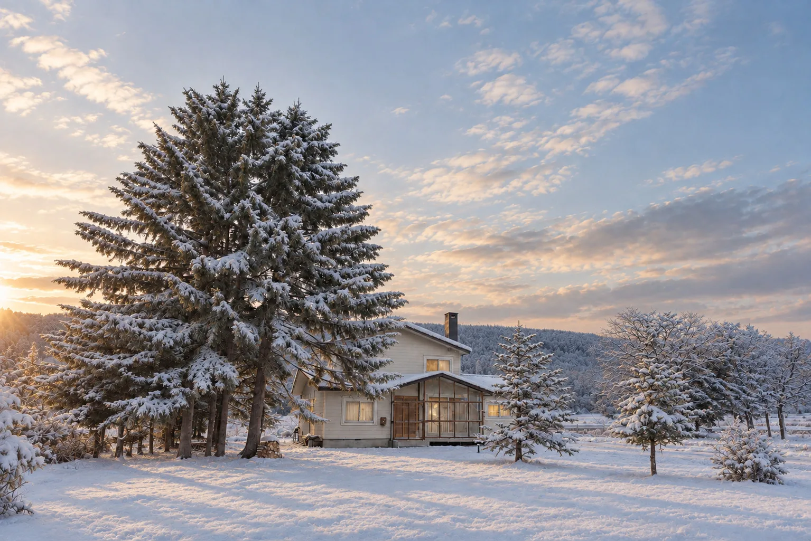

Real estate developers
You want a Tokyo view on income property planning and financials. You want to try lodging or other new uses.
UBAKUConsulting
Real estate development, new businesses, and opening a lodging. Based in Biei and Higashikawa, Hokkaido, and available across Japan.
Tokyo practice, local ground,
one business.
Hands-on work in income property development and new businesses, built up at a major real estate company in Tokyo. Field experience from opening and running a lodging from scratch in Hokkaido. On both foundations, we think it through right beside you, from structuring the business to seeing it take shape. Our lodging support draws on methods we tested at our own villa.
From business planning for rental apartments, office buildings, and hotels to financial review, product planning, and concept development. We look at pricing, rents, added value, location, and demand, and build products people choose, together with local companies.
We support launching something different from what you do today. For example, an apartment company starting a sauna, or a condominium developer entering offices or hotels. From reading the market and testing viability to trying it small and confirming it works.
From choosing a property and forecasting the numbers to booking site registration, photography, and systems for cleaning and guest care. We help owners run a lodging with little effort. As a registered Residential Lodging Management Operator, we also take inquiries about operations.
See the menu →You want a Tokyo view on income property planning and financials. You want to try lodging or other new uses.
You want to go beyond building and start your own real estate business. You want to put your land and buildings to work.
You want to open a lodging in an empty or unused building. Or you have opened, and running it or attracting guests is a struggle.
You want to plan, from the very start, how to use idle property or a new business that brings people to the region.

A private villa for one group a day.
A former farmhouse built in 1968 and passed down for over half a century, in Naka-Ubakubetsu, Biei. We took it on ourselves, from finding the property, and opened in January 2026. All of our lodging support comes from what we first tried here.
UBAKU Villa 宇莫別荘 opens
The whole house, for up to 10 guests
Share of guests from overseas (as of October 2026)
Booking.com review score (as of October 2026)
Consecutive Airbnb Superhost periods (as of October 2026)
Yes. We take on business planning and new business projects from real estate developers and builders. We propose what fits, from one-off advice to support over a set period.
We do not simply bring in Tokyo cases. We rebuild them to fit local demand and business scale. Having opened our own villa in Hokkaido, we can look with you for a form that suits regional reality.
UBAKU is registered as a Residential Lodging Management Operator (Minister of Land, Infrastructure, Transport and Tourism (01) No. F06458). We can discuss contract operations for notified residential lodging businesses, depending on area and conditions. We also help owners build systems to run a lodging with little effort.
We are based in Biei and Higashikawa, Hokkaido, and work across Japan. Meetings are mainly online, and we visit on site when needed. English support is by email.
Yes. Booking site registration only, or photography only, is welcome. We help with what you need, as much as you need.
We do not buy, sell, or broker property. We can help you think through property choices and whether a business would work.
UBAKU Design
For building renovations, UBAKU Design works beside you through design supervision and producing. You can also see the before and after of UBAKU Villa 宇莫別荘 there.
Start with a conversation.
Real estate development, new businesses, lodging. Even an idea that has not taken shape yet is welcome. Tell us where you are now. We reply to English inquiries by email.